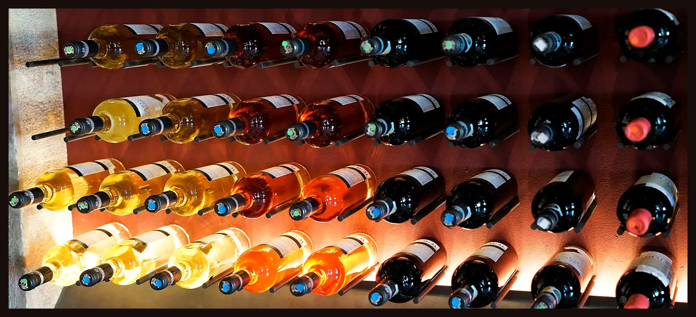

<div class="shop-history">
  
  <div class="shop-history__content">
    <article class="shop-history__item">
      <h3 class="shop-history__title">1796</h3>
      <p class="shop-history__heading">The Beginning</p>
      <p class="shop-history__description">
        Our family has been engaged in winemaking since the 18th century when
        the first grape bushes were planted in the Napa Valley by our ancestors.
      </p>
    </article>
    <article class="shop-history__item">
      <h3 class="shop-history__title">1912</h3>
      <p class="shop-history__heading">Selling Wines</p>
      <p class="shop-history__description">
        Our home-based winery in California became a small, family-owned
        business, that supplied wine for connoisseurs of this amazing drink.
      </p>
    </article>
    <article class="shop-history__item">
      <h3 class="shop-history__title">1946</h3>
      <p class="shop-history__heading">Restart of Production</p>
      <p class="shop-history__description">
        After the Second World War, we adopted the experience of European
        winemakers and began to use new technologies in our wine-making
        processes.
      </p>
    </article>
    <article class="shop-history__item">
      <h3 class="shop-history__title">2010</h3>
      <p class="shop-history__heading">Worldwide Shipping</p>
      <p class="shop-history__description">
        We used to sell our wines only wine only in California. But since 2010,
        we have been shipping our bottles to other American states and even
        other countries.
      </p>
    </article>
  </div>
</div>
